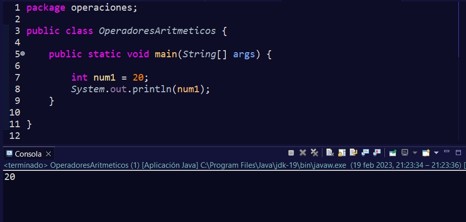
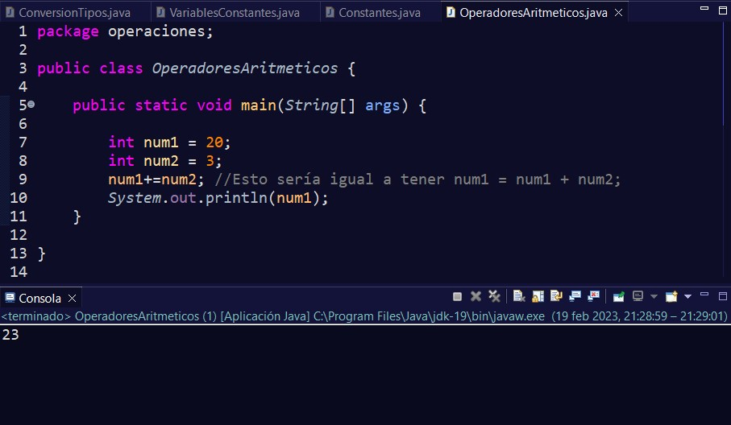
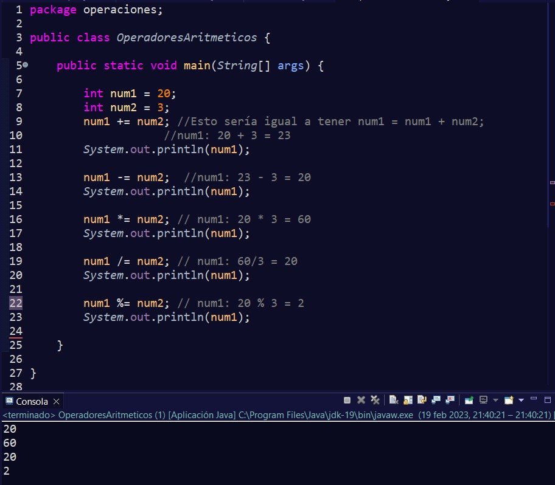
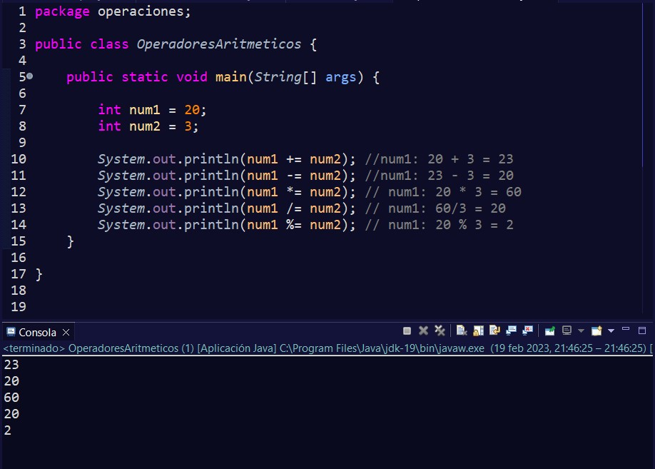

Cuando decimos que asignamos algo a una variable, lo que le indicamos es que almacene en la variable ese valor.
El operador = de asignación ya lo hemos visto. Con él indicamos el valor concreto que queremos almacenar.
Pero en el apartado de operadores, vimos que existían otros. Por ejemplo +=.
Si nos fijamos, aquí lo que estamos haciendo es decirle a Java que en la variable num1 incremente su valor con el valor de num2. Es como una abreviación de la sentencia num1 = num1 + num2;.
Parece un poco extraño esto, pero es que primero Java realiza la operación que tenemos (num1 + num2), que en este caso es 20 + 3. Y una vez calculado, lo que hace es guardar el nuevo valor en la variable num1.
Lo mismo ocurriría con el resto de operadores de asignación similares:
También nos podríamos haber ahorrado tener que estar llamando todas las veces a num1 y haber escrito nuestro código de la siguiente manera, ya que el resultado será el mismo:
Los otros operadores se utilizan a nivel de bits, y debido a que no se suele utilizar con frecuencia y que se está comenzando, creo que el contenido visto hasta ahora es suficiente.